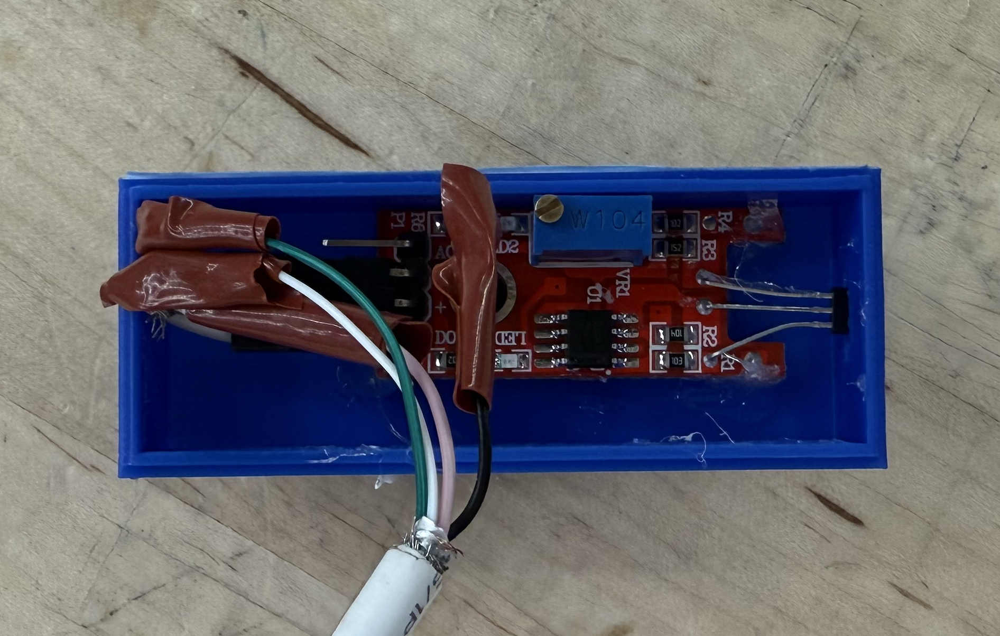

Bike Speedometer with Hall Effect Sensor



→ scroll to see more →
Overview
A one-week mini project built with an Arduino kit and whatever materials I had on hand. The result is a functional bike speedometer using a hall effect sensor and a 16×2 LCD display. The system measures wheel revolutions via a magnet mounted to a spoke, computes real-time speed and cumulative distance, and displays both on a handlebar-mounted enclosure. A button toggles between miles and kilometers; a second resets the odometer; a dial adjusts the display contrast.
The motivation was practical — I'd moved off-campus and was biking daily. A speedometer was something I'd actually use, and working within a tight one-week window with no budget pushed me to focus on getting something real and functional rather than overthinking the design.
Technical Details
- Hall effect sensor detects each wheel revolution as a magnet on the spoke passes by; mounted in a custom 3D-printed housing near the rear hub
- Sensor signal and power routed from the rear hub to the handlebar unit via a repurposed USB cable threaded along the frame
- Arduino counts pulses, converts to speed and distance using wheel circumference, and refreshes the 16×2 LCD in real time
- Laser-cut wooden enclosure mounts to the handlebars with flush-integrated buttons for unit toggling and odometer reset
- Potentiometer controls LCD contrast; all electronics self-contained within the enclosure
Outcome
The speedometer worked reliably from first ride — speed and distance update accurately in real time, the unit/reset buttons behave as intended, and the sensor consistently picks up every revolution. Given one week and a $0 budget, the hardest part was purely physical: mounting hardware to curved, uneven bike surfaces that needed to withstand high speeds and road vibration, using only what was on hand — zip ties, hot glue, and tape. Getting it all working within those constraints, and then actually using it on the commute to campus, made it one of the more satisfying quick builds I've done.